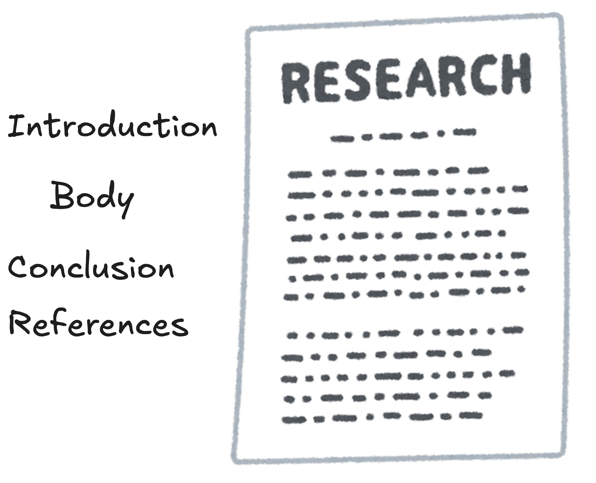
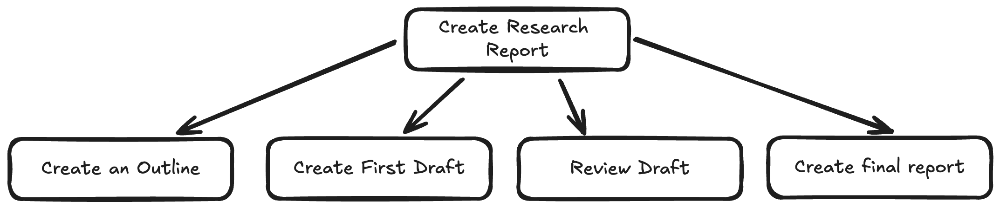
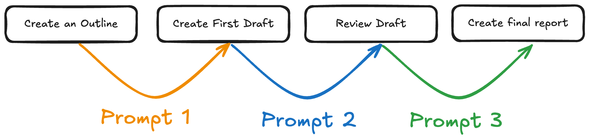
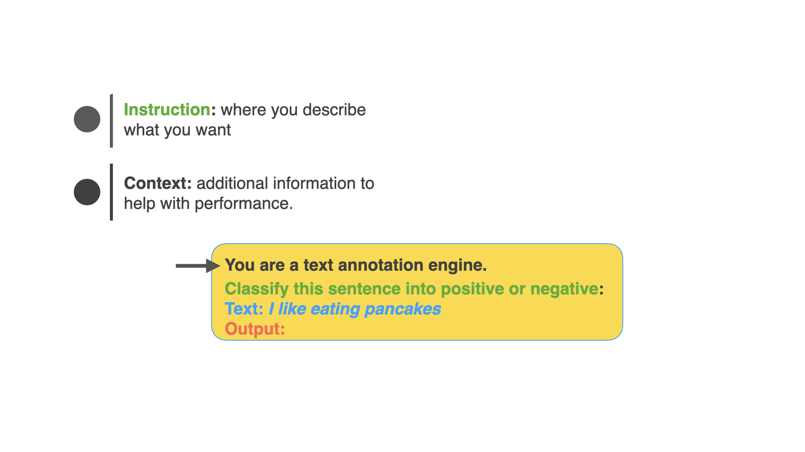
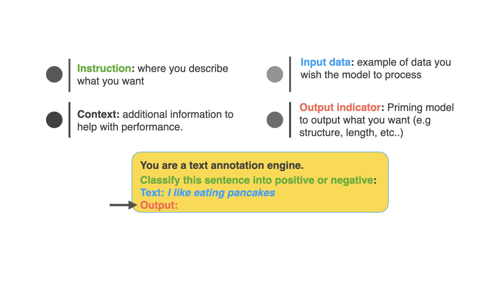
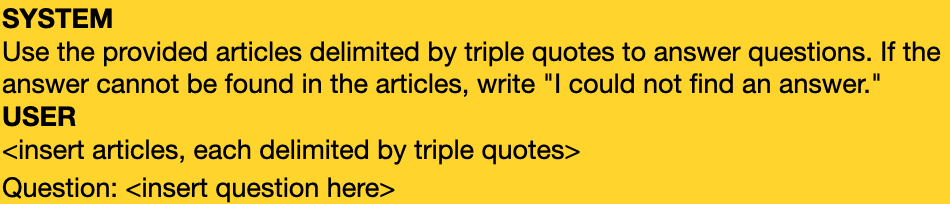
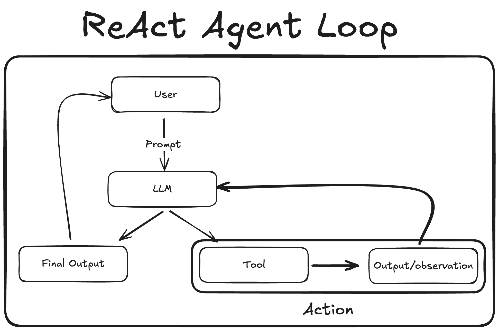
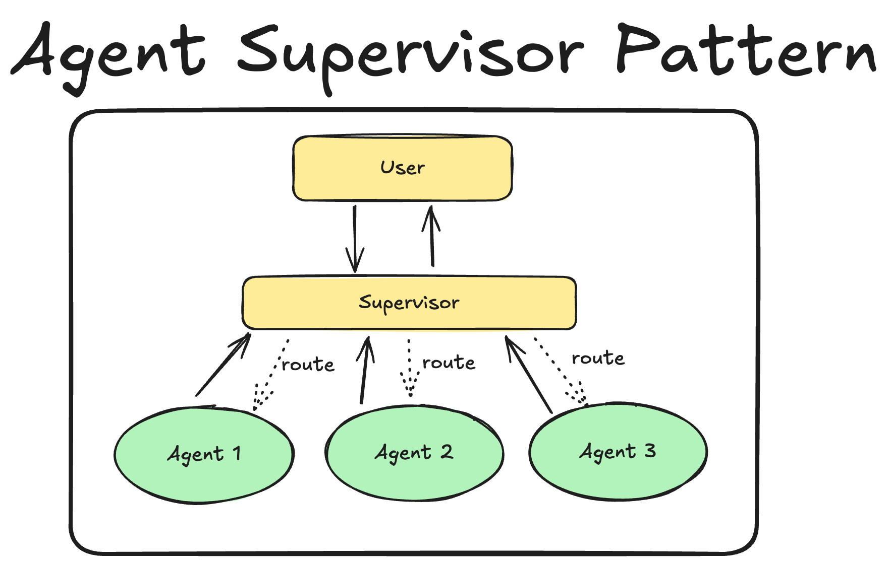
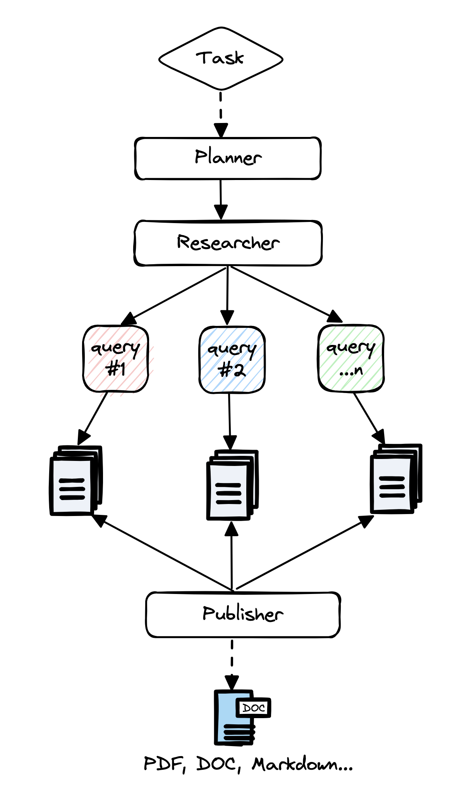

# Table of Contents - Creating Research Reports with Gen AI -- - Quick Primer on Prompting -- - Demo: Naive Prompt Engineering for Research Reports -- - Agentic Workflows -- - Introducing our experts -- - It's Demo Time! 🚀 -- - Poll: _Best demo?_ -- - Feedback Analysis & Q&A -- - Semi-Live Demo on building research reports with langgraph --- class: center, middle # Creating Research Reports with Gen AI --- <div style="display: flex; justify-content: center;"> <img src="2024-08-15-11-53-37.png" width="500px"> </div> --- <div style="display: flex; justify-content: center;">  </div> --- class: center, middle <div style="display: flex; justify-content: center;">  </div> --- class: center, middle # Prompt Engineering Workflow <div style="display: flex; justify-content: center; margin-bottom: -100px;">  </div> --- class: center, middle # Quick Primer on Prompting --- # Prompt Basics ## Components of the prompt <img src="../notebooks/assets-resources/prompt-basics.004.jpeg" width="800px" style="margin-left: -20px; margin-top: -40px;"> --- # Prompt Basics ## Components of the prompt: <span style="color: green">instruction</span> <img src="../notebooks/assets-resources/prompt-basics.005.jpeg" width="800px" style="margin-left: -20px; margin-top: -40px;"> --- # Prompt Basics ## Components of the prompt: <span style="color: green">instruction</span>, <span style="color: black">context</span>  --- # Prompt Basics ## Components of the prompt: <span style="color: green">instruction</span>, <span style="color: black">context</span> <span style="color: #0d8eb9">input data</span> <img src="../notebooks/assets-resources/prompt-basics.007.jpeg" width="800px" style="margin-left: -20px; margin-top: -40px;"> --- # Prompt Basics ## Components of the prompt: <span style="color: green">instruction</span>, <span style="color: black">context</span> <span style="color: #0d8eb9">input data</span> , <span style="color: red">output indicator</span>  --- # Building Good Prompts ## 3 Simple Rules -- - __Write clear instructions__ -- - <span style="color: red">Bad: </span> Who’s president? -- - <span style="color: green">Better:</span> Who was the president of Mexico in 2021? <p style="font-size: 14px; margin-top: 10px;"> <sup>[3]</sup><a href="https://platform.openai.com/docs/guides/prompt-engineering">OpenAI's Prompt Engineering Guide</a> </p> --- # Building Good Prompts ## 3 Simple Rules - __Provide reference text__ --  <p style="font-size: 14px; margin-top: 10px;"> <sup>[3]</sup><a href="https://platform.openai.com/docs/guides/prompt-engineering">OpenAI's Prompt Engineering Guide</a> </p> --- # Building Good Prompts ## 3 Simple Rules - __Break tasks into subtasks__ -- <img src="../notebooks/assets-resources/prompt-strategy3.png" alt="Prompt Strategy 3" style="width: 600px;"/> <p style="font-size: 14px; margin-top: 10px;"> <sup>[3]</sup><a href="https://platform.openai.com/docs/guides/prompt-engineering">OpenAI's Prompt Engineering Guide</a> </p> --- class: center, middle <h2> <span style="background-color: lightgreen"> Demo: Naive Prompt Engineering for Research Reports </span> </h2> --- class: center, middle # When is Prompt Engineering Not Enough? --- class: center, middle ## _when a problem requires access to specific data or usage of tools to be completed_ --- class: center, middle # What can we do instead? --- class: center, middle # Agentic Workflows --- class: center, middle  --- class: center, middle  --- class: center, middle # The Repo that started it all: _GPT-Researcher_ <h2> <span style="background-color: lightgreen"> Demo: GPT-Researcher </span> </h2> <p style="font-size: 14px; "> <a href='https://github.com/assafelovic/gpt-researcher'>GPT-Researcher github</a> </p> --- class: center, middle <div style="display: flex; justify-content: center;">  </div> --- class: center, middle # Introducing our experts --- # 1 - Aishwarya Naresh Reganti ``` works as a GenAI tech lead at the AWS GenAI Innovation Center, leading partnerships with external AWS customer organizations, usually mid to large-sized companies. These partnerships aim to identify, develop, and evaluate cutting-edge solutions using generative AI technologies for critical business functions. With more than eight years of experience in machine learning and contributions to over 30 research publications in prestigious conferences like AAAI, ACL, CVPR, NeurIPS, and EACL, her work spans a range of topics. These include Large Scale Graph Neural Networks, Machine Translation, Multimodal Summarization, and the exploration of Social Media and Networks, Human-Centric ML, Artificial Social Intelligence, and Code-Mixing. In addition to her professional work, Aishwarya has been involved in mentoring several Master's and PhD students in the aforementioned areas. Aishwarya has also designed multiple online courses covering Generative AI concepts, which have drawn in over 3,000 students. Additionally, she frequently shares simplified insights on complex generative AI research on LinkedIn, making it easier for more people to understand and use. ``` --- # 2 - Sajal Sharma ``` AI engineer with over 8 years of experience in the tech industry. He specializes in machine learning, natural language processing, and software engineering. Sajal has mentored students in Machine Learning and Data Science at Udacity. He holds a master's degree from the University of Melbourne and is currently working at Menyala, a venture builder founded by Temasek, a global investment firm based in Singapore. (Video is 11:35 minutes long) ``` --- # 3 - Richmond Alake ``` Richmond Alake is an AI/ML developer advocate at MongoDB, where he creates high-quality technical learning content for Developers and MongoDB customers building AI applications. In this role, he provides expert guidance on best practices for developing AI solutions that leverage Large Language Models (LLMs) and MongoDB, as well as offering insights on integrations and other critical aspects of AI development. Prior to joining MongoDB, Richmond served as a Machine Learning Architect at Slalom Build within their Data Engineering practice. There, he explored the use of Generative AI solutions for a diverse range of use cases as well as implementing efficient compute data pipelines for AI/data intensive applications. Richmond's expertise in AI extends to his previous role as a Computer Vision Engineer at a London-based startup. In this position, he worked with state-of-the-art deep learning models to create interactive and immersive experiences on mobile devices. (Video is 13:01 minutes long) ``` --- # 4 - Nicole Königstein ``` Data scientist and quantitative researcher working as chief AI officer and head of quantitative research at quantmate. She also serves as an AI consultant, leading workshops and guiding companies from AI concept to deployment. She’s the author of Mathematics for Machine Learning with NLP and Python and Transformers in Action with Manning Publications, and the author of the forthcoming book Transformers: The Definitive Guide, with O'Reilly Media. As a guest lecturer, Nicole shares her expertise in Python, machine learning, and deep learning at various universities. (Video is 10:00 minutes long) ``` --- # Raghavan Muthuregunathan ``` Raghavan, a senior engineering manager at LinkedIn, is leading the search AI team that powers the global typeahead box and the subsequent landing page on LinkedIn, the LinkedIn premium Gen AI assistant. He is also a volunteer for the Linux Foundation's GenAI Common, leading multiple work streams related to generative AI applications, education and outreach. (Video is 10:13 minutes long) ``` --- class: center, middle # It's Demo Time! 🚀 --- class: center, middle # Feedback Analysis <h2> <span style="background-color: lightgreen"> Share Excalidraw Screen </span> </h2>